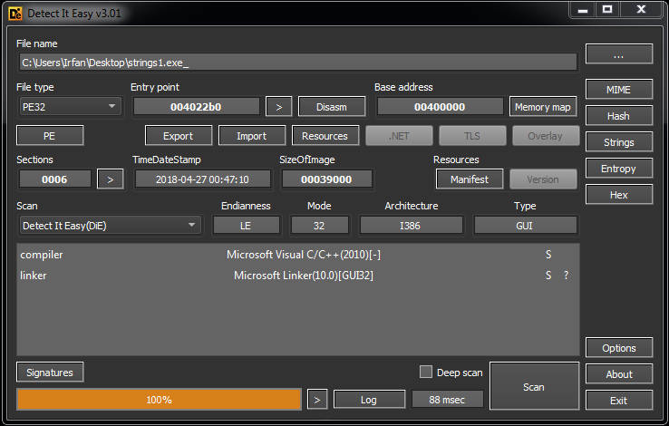
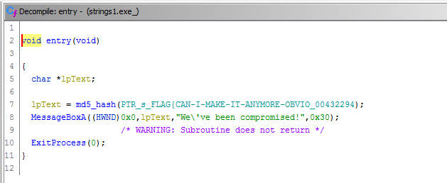
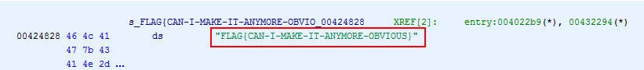
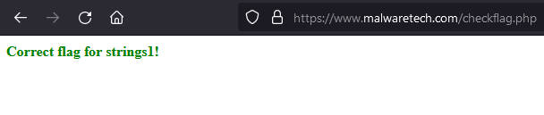

MalwareTech Challenge #1
Windows Reversing
Strings1.exe
Hello friend, in this challenge we are given a PE file named strings1.exe_ . The rule of this challenge is that we can only use static analysis to solve it, that’s why there is “_” at the end of the PE file name, which is to prevent us from accidentally running it.
The description of this challenge:
strings1.exe contains an un-encrypted flag stored within the executable. When run, the program will output an MD5 hash of the flag but not the original. Can you extract the flag?
Let’s start it with detect it easy to collect basic info of this file.

This PE uses C++, so i use Ghidra for the next step.
I opened it in Ghidra, then go to the entry point function, and immediately found something interesting.

This is a very simple function, so we can understand it easily. Simply the program will hash a string by calling the md5_hash function and the result will be displayed by the MessageBox function, looks like the description of the challenge above, huh?
Based on that, we can conclude that the string that becomes the parameter of the md5_hash function is the flag.

Let’s check this FLAG{CAN-I-MAKE-IT-ANYMORE-OBVIOUS} out:

Ok, we’ve got the flag.